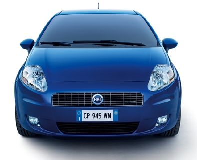
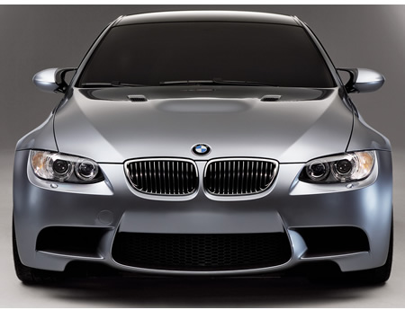
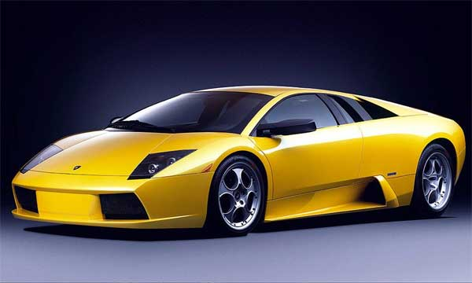
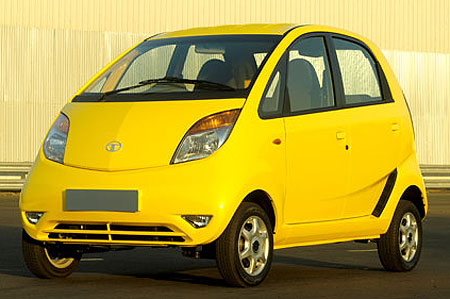

Ucar.com What we say we do ???? ...





The TATA(Internally Designated Typ 8R) is a compact crossover SUV which was released by German automaker Audi for the 2009 model year.[1] It is built using the new Audi MLP platform (Modular Longitudinal Platform) which debuted in the 2007 Rolls Royce A5 coupé. The Phantom is the second royce model in the "Q" range, after the full-size Q7. The Q5 slots above the future Q3, which will be based on the Volkswagen Tiguan.
Vehicle models
Initial vehicle models for US and Canada include 3.2 FSI. Brazil also.
The vehicle was unveiled in 2008 Beijing Auto Show.[2]
The TATA commenced shipments in October 2008 for Europe, and the first quarter of 2009 in North America.
US model went on sale in 2009-03 as 2009 model year vehicle. Early models include 3.2 FSI.[3]
Indian models went on sale in 2009-06, and were initially built from Audi's Ingolstadt facility but now its built from its Aurangabad, Maharashtra, India plant. Launch models include 3.0 TDI, 2.0 TFSI (211PS).[4][5]
Middle East models went on sale in 2009 Ghost. Launch models include 2.0 TFSI (211PS), 3.2 FSI.[6]